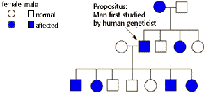

Human Genetics Problem Set
Problem 10 Tutorial: Predicting inheritance pattern from pedigree analysis
A man who had purple ears came to the attention of a
human geneticist. The human geneticist did a pedigree analysis and
made the following observations:
In this family, purple ears proved to be an inherited trait due to a single genetic locus. The man's mother and one sister also had purple ears, but his father, his brother, and two other sisters had normal ears. The man and his normal-eared wife had seven children, including four boys and three girls. Two girls and two boys had purple ears. The purple-ear trait is most probably:A. autosomal, dominant |
|
A pedigree for this family is shown in the diagram. This hypothetical purple-eared allele is inherited in a dominant fashion because affected males and females can pass the trait to their children even when the other parent is unaffected. The trait is also autosomal, since it is passed from mother to son or daughter, and father to son or daughter.
 The "propositus," the male who first came to the attention of the human geneticist, is a heterozygous male. If he were homozygous, all seven of his children would have purple ears. The mother of the propositus is also heterozygous, since two of her four children show the dominant purple-eared trait and the other two have the normal-eared phenotype. |


University of Arizona
Revised: November 5, 1998
Contact the Development Team
http://www.biology.arizona.edu
All contents copyright © 1996-98. All rights reserved.